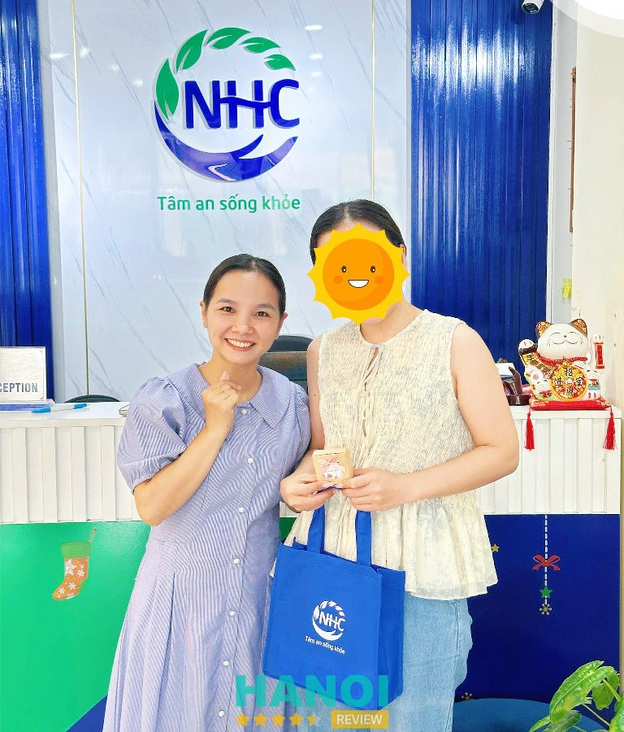
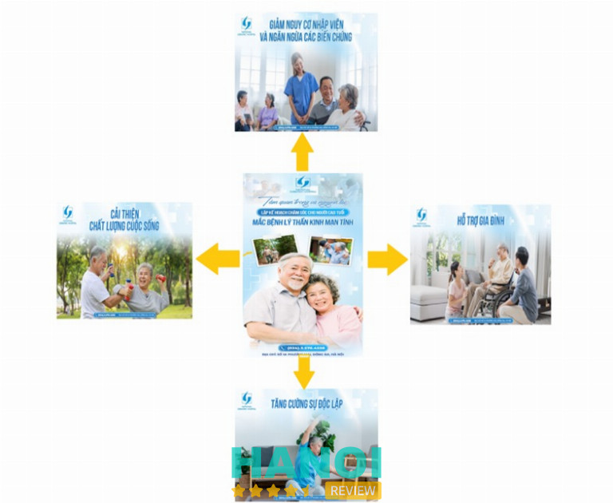
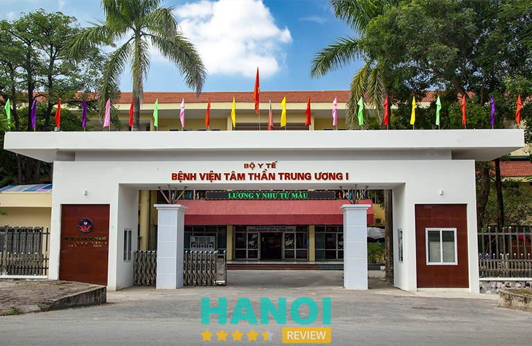
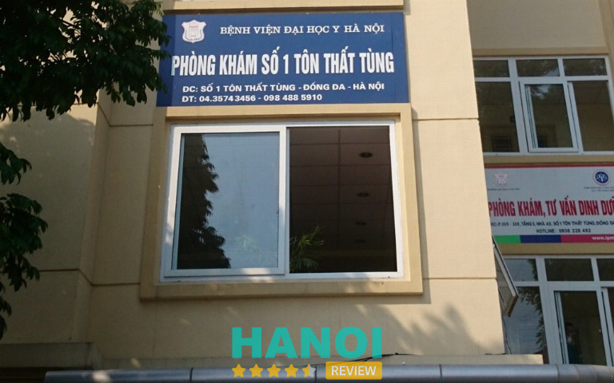
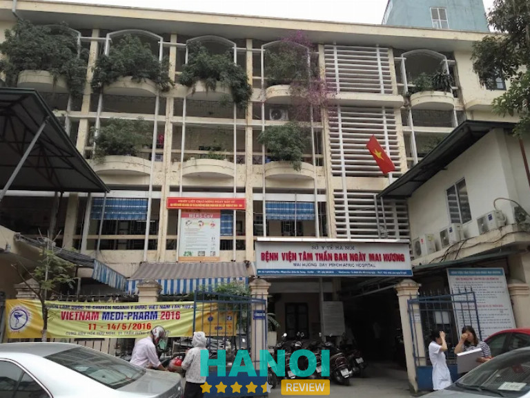
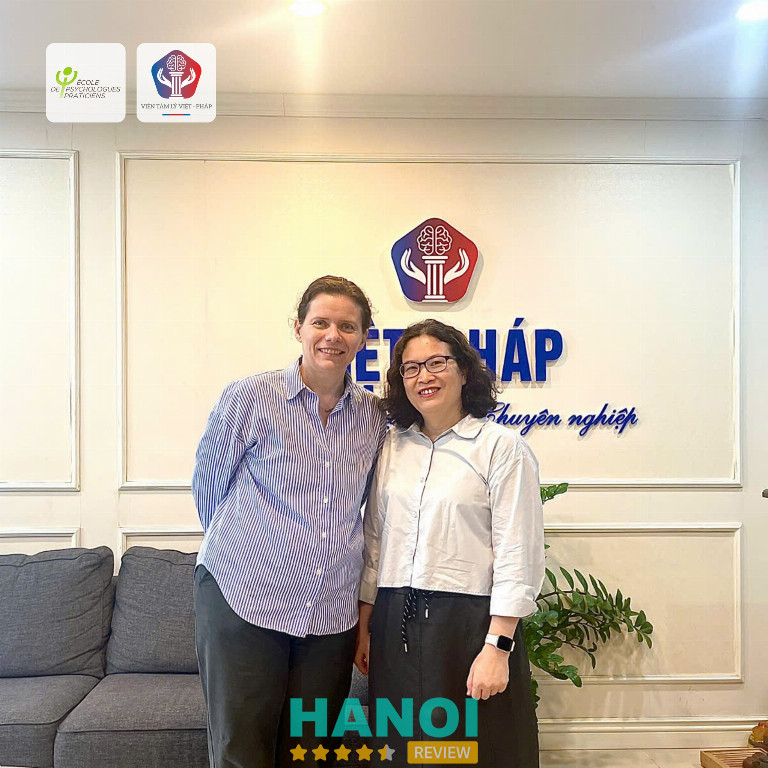

10 Địa chỉ khám rối loạn lo âu ở Hà Nội giúp cải thiện tinh thần hiệu quả
Khám rối loạn lo âu ở Hà Nội là nhu cầu ngày càng tăng khi nhiều người gặp áp lực kéo dài, ảnh hưởng đến sức khỏe tinh thần. Việc thăm khám đúng chuyên khoa giúp phát hiện sớm, can thiệp kịp thời, mang lại sự ổn định cảm xúc và cải thiện chất lượng cuộc sống một cách bền vững.
Top 10 nơi khám rối loạn lo âu tại Hà Nội uy tín, có chuyên khoa hàng đầu
Việc tìm kiếm một địa chỉ chuyên sâu để khám rối loạn lo âu ở Hà Nội là cực kỳ quan trọng đối với quá trình hồi phục. Các cơ sở này được trang bị đội ngũ bác sĩ chuyên môn cao cùng hệ thống cơ sở vật chất hiện đại. Bạn nên tham khảo danh sách này để dễ dàng lựa chọn được nơi thăm khám phù hợp, đáng tin cậy.
Trung tâm Tâm lý và Phát triển Con người NHC Việt Nam
Trung tâm Tâm lý và Phát triển Con người NHC Việt Nam là một địa chỉ uy tín chuyên cung cấp các giải pháp hỗ trợ tham vấn tâm lý, giúp khách hàng vượt qua rối loạn lo âu và các vấn đề tâm lý liên quan. Được dẫn dắt bởi Coach Bùi Thị Hải Yến – chuyên gia tâm lý giàu kinh nghiệm, trung tâm cam kết đồng hành cùng người tham gia trong suốt quá trình giải quyết các triệu chứng lo âu, cải thiện sức khỏe tinh thần và lấy lại sự bình an trong cuộc sống.

Lộ trình hỗ trợ tại Tâm lý NHC được thiết kế dựa trên nền tảng khoa học tâm lý vững chắc, với mục tiêu hỗ trợ vượt qua rối loạn lo âu một cách hiệu quả và nhanh chóng. Trung tâm luôn nỗ lực không ngừng để tối ưu hóa các giải pháp, giúp tiết kiệm thời gian đồng hành và mang lại kết quả rõ ràng cho từng khách hàng.
Phương pháp hỗ trợ giải quyết rối loạn lo âu không dùng thuốc tại Tâm lý NHC:
- Các giải pháp tại Tâm lý NHC hoàn toàn tự nhiên, được nghiên cứu và phát triển dựa trên các nền tảng khoa học và có sự bảo trợ chuyên môn bởi Viện Nghiên cứu Tâm lý và Phát triển Con người.
- Chương trình đồng hành phù hợp cho những người gặp phải triệu chứng rối loạn lo âu kéo dài, hoặc những trường hợp lo âu tái phát sau khi đã sử dụng thuốc trong một thời gian dài.
- Trung tâm cam kết đồng hành 1-1 với từng khách hàng, minh bạch về chi phí và cam kết hoàn chi phí nếu không đạt kết quả như mong đợi.
- Các giải pháp hỗ trợ giúp giải quyết từ gốc các nguyên nhân gây ra rối loạn lo âu, đảm bảo an toàn tuyệt đối cho đối tượng trẻ em, phụ nữ mang thai và cho con bú.
Hỗ trợ đồng hành lâu dài:
- Trong suốt quá trình đồng hành, chuyên gia tại Tâm lý NHC luôn sẵn sàng hỗ trợ trực tiếp hoặc qua các kênh từ xa, giúp người tham gia giải quyết các vấn đề tâm lý liên quan đến rối loạn lo âu 24/7.
- Sau khi kết thúc lộ trình, các chuyên gia tiếp tục đồng hành để giúp duy trì sự ổn định về tinh thần và giúp khách hàng duy trì sự cân bằng trong cuộc sống.
Quy trình hỗ trợ độc quyền tại Tâm lý NHC được xây dựng dựa trên nền tảng khoa học Tâm trí – Tâm lý học và Ngôn ngữ Lập trình Tư duy, tác động sâu đến tiềm thức, giúp giải quyết tận gốc các vấn đề gây ra rối loạn lo âu. Lộ trình hỗ trợ cá nhân hóa được chia thành 5 giai đoạn rõ ràng: Giải tỏa – Cân bằng – Đồng hành – Huấn luyện – Huấn luyện chuyên sâu.
Lựa chọn Trung tâm Tâm lý và Phát triển Con người NHC Việt Nam là một quyết định đúng đắn để tiếp cận các giải pháp hỗ trợ tâm lý hiệu quả, giúp bạn vượt qua rối loạn lo âu và đạt được sự ổn định tinh thần lâu dài.
Thông tin liên hệ:
- Cơ sở 1: 235 Quan Hoa, P. Nghĩa Đô, Hà Nội
- Cơ sở 2: 37 Thâm Tâm, P. Yên Hòa, Hà Nội
- Cơ sở 3: 18 Phan Chu Trinh nối dài, P. Bình Lợi Trung, TP.HCM
- Cơ sở 4: 107 Hoàng Hoa Thám, P. Gia Định, TP.HCM
- Hotline: 096 589 8008
- Website: https://tamlynhc.vn
- Fanpage: FB.com/tamlytrilieunhc
- Email: tamlyphattriennhc@gmail.com
Viện Sức khỏe Tâm thần – P. Kim Liên
Viện Sức khỏe Tâm thần Quốc gia – Bệnh viện Bạch Mai là đơn vị đầu ngành về tâm thần, chuyên nghiên cứu, chẩn đoán và điều trị các bệnh lý tâm thần nặng, đặc biệt là rối loạn lo âu. Viện nổi bật với khả năng xử lý các ca bệnh phức tạp, cung cấp dịch vụ chuyên sâu, bao gồm cả điều trị nội trú, giúp cải thiện sức khỏe tâm thần toàn diện.
Dịch vụ khám rối loạn lo âu tại viện tập trung vào việc đánh giá, chẩn đoán chính xác và thiết lập kế hoạch điều trị phù hợp với từng trường hợp. Điểm nổi bật là đội ngũ bác sĩ chuyên môn cao, giàu kinh nghiệm trong điều trị các dạng rối loạn lo âu phức tạp, kết hợp các phương pháp trị liệu hiện đại và theo dõi sát sao tiến trình điều trị. Mức chi phí được công bố rõ ràng, phù hợp với các dịch vụ khám và điều trị nội trú.
Các ưu điểm nổi bật:
- Chẩn đoán và điều trị chuyên sâu cho rối loạn lo âu nặng, phức tạp
- Hỗ trợ điều trị nội trú, theo dõi sát sao tiến trình sức khỏe tâm thần
- Ứng dụng các phương pháp trị liệu hiện đại, khoa học
- Đội ngũ bác sĩ chuyên môn cao, giàu kinh nghiệm
- Chi phí dịch vụ minh bạch, rõ ràng
Viện Sức khỏe Tâm thần Quốc gia – Bệnh viện Bạch Mai là lựa chọn hàng đầu khi cần khám và điều trị rối loạn lo âu tại Hà Nội. Uy tín của viện giúp kết hợp hiệu quả các phương pháp điều trị, mang lại sự an tâm cho người bệnh trong quá trình chăm sóc sức khỏe tâm thần.
Thông tin liên hệ:
- Địa chỉ: 78 Giải Phóng, P. Kim Liên, Hà Nội
- Điện thoại: 024 3576 5344
- Email: nimhvn@gmail.com
- Website: nimh.gov.vn
- Facebook: fb.com/nimh.vietnam
GỢI Ý: 5 Trung tâm tư vấn tâm lý học đường tại Hà Nội uy tín, chất lượng
Bệnh viện Lão Khoa Trung Ương – Kim Liên
Khoa Sức khỏe Tâm thần – Bệnh viện Lão khoa Trung ương là địa chỉ uy tín chuyên thăm khám và điều trị các vấn đề tâm thần, tâm lý ở người cao tuổi. Nơi đây nổi bật với khả năng phát hiện và xử lý sớm các rối loạn lo âu, trầm cảm, cũng như các rối loạn nhận thức đi kèm. Bệnh viện tập trung vào chăm sóc toàn diện, kết hợp tư vấn chuyên sâu và phác đồ điều trị phù hợp với từng cá nhân.

Dịch vụ khám rối loạn lo âu tại đây được thiết kế chuyên biệt, kết hợp các phương pháp đánh giá tâm lý lâm sàng hiện đại, đồng thời áp dụng các liệu pháp tâm lý và điều trị y tế theo nhu cầu. Đội ngũ bác sĩ, chuyên gia tâm thần giàu kinh nghiệm và chuyên môn cao trong lĩnh vực người cao tuổi, luôn theo sát quá trình điều trị để tối ưu hiệu quả và cải thiện chất lượng cuộc sống. Giá khám và điều trị được công khai minh bạch, phù hợp với nhiều đối tượng.
Điểm nổi bật:
- Thăm khám chuyên sâu rối loạn lo âu, trầm cảm, rối loạn nhận thức
- Tư vấn liệu pháp tâm lý cá nhân hóa
- Kết hợp đánh giá lâm sàng và xét nghiệm hỗ trợ
- Đội ngũ bác sĩ giàu kinh nghiệm, chuyên môn cao
- Giá khám và điều trị hợp lý, minh bạch
Khoa Sức khỏe Tâm thần – Bệnh viện Lão khoa Trung ương là lựa chọn uy tín cho các vấn đề rối loạn lo âu ở người cao tuổi. Quy trình thăm khám và điều trị khoa học, chuyên nghiệp, giúp cải thiện tinh thần và sức khỏe tổng thể một cách hiệu quả.
Thông tin liên hệ:
- Địa chỉ: 1A Phương Mai, Kim Liên, Hà Nội
- Điện thoại: 024 3576 4558
- Email: benhvienlaokhoa.bvlktw@gmail.com
- Website: benhvienlaokhoa.vn
- Facebook: fb.com/www.benhvienlaokhoa.vn
Bệnh viện Tâm thần Trung ương 1 – Thường Tín
Bệnh viện Tâm thần Trung ương I là bệnh viện tuyến cuối về lĩnh vực Tâm thần trên cả nước, nổi bật trong khám và điều trị các rối loạn tâm lý, trong đó có rối loạn lo âu. Bệnh viện cung cấp dịch vụ toàn diện từ thăm khám, chẩn đoán đến điều trị bằng thuốc và phục hồi chức năng tâm lý xã hội, mang lại giải pháp toàn diện cho người bệnh.
Với đội ngũ y bác sĩ chuyên môn cao, giàu kinh nghiệm, cơ sở vật chất đầy đủ, bệnh viện trở thành lựa chọn hàng đầu khi cần chăm sóc sức khỏe tâm thần tại Hà Nội.

Dịch vụ tại bệnh viện tập trung vào nhiều phương diện, vừa kết hợp điều trị y học hiện đại, vừa chú trọng phục hồi tâm lý xã hội, hỗ trợ cải thiện chất lượng cuộc sống cho người bệnh. Điểm nổi bật của bệnh viện là khả năng can thiệp đa dạng, từ đánh giá lâm sàng, kê đơn thuốc, tư vấn tâm lý, đến các liệu pháp hỗ trợ thích hợp.
Các ưu điểm có thể kể đến:
- Khám và chẩn đoán rối loạn lo âu chính xác
- Điều trị bằng thuốc theo phác đồ khoa học
- Phục hồi chức năng tâm lý xã hội, hướng tới ổn định lâu dài
- Đội ngũ bác sĩ và chuyên gia chuyên môn cao
- Cơ sở vật chất đầy đủ, hỗ trợ quá trình điều trị
Bệnh viện Tâm thần Trung ương I khẳng định uy tín trong lĩnh vực chăm sóc sức khỏe tâm thần tại Hà Nội. Lựa chọn bệnh viện là bước đi quan trọng để nhận được dịch vụ chuyên nghiệp, toàn diện và đáng tin cậy, giúp cải thiện sức khỏe tâm lý một cách hiệu quả.
Thông tin liên hệ:
- Địa chỉ: Xã Thường Tín, Hà Nội
- Điện thoại: 024 3385 3227
- Email: bvtttw1@gmail.com
- Website: bvtttw1.gov.vn
Phòng khám số 1 – Bệnh viện Đại Học Y Dược – Đống Đa
Phòng khám số 1 – Bệnh viện Đại học Y Hà Nội là địa chỉ uy tín trong việc khám và điều trị các rối loạn lo âu, được đánh giá cao nhờ dịch vụ khám theo yêu cầu chất lượng cao. Điểm đặc biệt nhất của phòng khám là sự tham gia trực tiếp của các chuyên gia, Phó Giáo sư đầu ngành về Tâm thần từ Viện Sức khỏe Tâm thần (Bạch Mai), mang đến sự chính xác và tin cậy trong chẩn đoán cũng như hướng dẫn điều trị.
Phòng khám thích hợp cho cả khám ngoại trú và tái khám định kỳ, giúp theo dõi tiến triển tình trạng sức khỏe tâm thần một cách hiệu quả.

Dịch vụ khám rối loạn lo âu tại phòng khám nổi bật với:
- Chẩn đoán và đánh giá tình trạng lo âu chi tiết, toàn diện.
- Phác đồ điều trị phù hợp với từng mức độ rối loạn, kết hợp thuốc và liệu pháp tâm lý.
- Hỗ trợ theo dõi tái khám định kỳ, điều chỉnh liệu trình khi cần thiết.
- Tư vấn về các phương pháp phòng ngừa và cải thiện lối sống, giảm căng thẳng, lo âu.
- Hỗ trợ khám ngoại trú tiện lợi, giảm thời gian chờ đợi.
Với đội ngũ chuyên gia giàu chuyên môn và phương pháp khám hiện đại, phòng khám số 1 – Bệnh viện Đại học Y Hà Nội khẳng định uy tín trong việc chăm sóc sức khỏe tâm thần tại Hà Nội. Đây là lựa chọn lý tưởng cho người cần khám rối loạn lo âu, tìm kiếm dịch vụ chất lượng cao và theo dõi sức khỏe định kỳ.
Khám rối loạn lo âu ở Hà Nội tại phòng khám số 1 – Bệnh viện Đại học Y Hà Nội mang lại dịch vụ chuyên nghiệp và hiệu quả, đáng lựa chọn để chăm sóc sức khỏe tâm thần.
Thông tin liên hệ:
- Địa chỉ: Số 1 Tôn Thất Tùng, Đống Đa, Hà Nội
- Điện thoại: 1900 6422
- Email: phongkhamso1@hmu.edu.vn
- Website: hmu.edu.vn
- Facebook: fb.com/HMUHospital
THAM KHẢO: 10 Trung tâm tâm lý trị liệu tại Hà Nội uy tín nhất, dịch vụ tận tâm
Bệnh viện E – Cầu Giấy
Khoa Sức khỏe Tâm thần – Bệnh viện E thuộc bệnh viện đa khoa hạng I, ghi dấu ấn trong khám và hỗ trợ điều trị rối loạn liên quan đến stress và lo âu. Đội ngũ bác sĩ giàu kinh nghiệm đảm nhiệm việc tiếp nhận, phân tích triệu chứng và xây dựng hướng xử lý phù hợp, tạo sự yên tâm trong suốt quá trình thăm khám.
Dịch vụ triển khai theo quy trình chú trọng đánh giá kỹ lưỡng và theo dõi từng giai đoạn. Nhiều phương pháp chuyên môn được áp dụng nhằm hỗ trợ giảm căng thẳng và cải thiện trạng thái cảm xúc. Các phương án được điều chỉnh linh hoạt theo từng giai đoạn diễn tiến để tăng hiệu quả hỗ trợ. Quy trình hướng đến mục tiêu ổn định tâm lý và nâng cao chất lượng sống.
Một số điểm nổi bật:
- Cơ sở vật chất sạch sẽ, phòng khám bố trí hợp lý
- Quy trình tiếp nhận rõ ràng
- Bác sĩ giàu kinh nghiệm trong lĩnh vực stress và lo âu
- Theo dõi xuyên suốt quá trình thăm khám
Khoa Sức khỏe Tâm thần – Bệnh viện E mang lại sự tin cậy cho người tìm kiếm địa chỉ phù hợp trong hành trình cải thiện sức khỏe tinh thần. Dịch vụ chuyên môn và cách tổ chức rõ ràng tạo nền tảng giúp quá trình phục hồi diễn ra ổn định. Đây là lựa chọn đáng chú ý cho người cần hỗ trợ chuyên sâu và hướng dẫn phù hợp thêm.
Thông tin liên hệ:
- Địa chỉ: Tầng 1 – nhà C – 87 Trần Cung, Nghĩa Tân, Cầu Giấy, Hà Nội
- Điện thoại: 024 3219 1589
- Email: khoasuckhoetamthan.bve@gmail.com
- Website: benhviene.com
- Facebook: fb.com/tamthanvatamly
Bệnh Viện Tâm Thần Ban Ngày Mai Hương – Hai Bà Trưng
Bệnh viện Tâm thần ban ngày Mai Hương là đơn vị chuyên sâu trong lĩnh vực điều trị rối loạn tâm thần kinh, nổi bật với mô hình trị liệu ban ngày hỗ trợ người bệnh duy trì nhịp sinh hoạt thường nhật. Đơn vị ghi dấu bằng sự uy tín lâu năm và thế mạnh trong ứng dụng kết hợp hài hòa giữa y học hiện đại cùng y học cổ truyền, mang đến hướng chăm sóc toàn diện và phù hợp với từng trường hợp.

Các chương trình trị liệu được xây dựng bài bản, gồm nhiều phương pháp hỗ trợ nhằm tối ưu hóa hiệu quả điều trị. Đội ngũ y bác sĩ tâm lý – tâm thần nhiều năm gắn bó chuyên môn góp phần nâng cao chất lượng khám và theo dõi liên tục cho từng hồ sơ bệnh lý. Quy trình điều trị ban ngày tạo điều kiện để người bệnh tiếp tục sinh hoạt bình thường mà vẫn nhận được sự hỗ trợ y khoa cần thiết.
Một số điểm nổi bật thường được lựa chọn:
- Trị liệu ban ngày, giúp duy trì thói quen sống.
- Kết hợp y học hiện đại và y học cổ truyền.
- Hỗ trợ theo dõi sát sao theo từng giai đoạn.
- Cung cấp đa dạng dịch vụ liên quan đến các rối loạn tâm thần kinh.
Bệnh viện Tâm thần ban ngày Mai Hương tiếp tục khẳng định uy tín thông qua chất lượng dịch vụ và định hướng hỗ trợ bền vững cho người bệnh. Lựa chọn đơn vị này góp phần mang lại sự an tâm trong suốt quá trình điều trị.
Thông tin liên hệ:
- Địa chỉ: 4 P. Hồng Mai, Bạch Mai, Hai Bà Trưng, Hà Nội
- Điện thoại: 0365 351 932
Viện Tâm lý Việt Pháp (IPF) – Cầu Giấy
Viện Tâm lý Việt Pháp (IPF) được biết đến như một đơn vị chuyên sâu trong lĩnh vực trị liệu tâm lý hiện đại, nổi bật với định hướng ứng dụng Phân tâm học và các phương pháp trị liệu Quốc tế.
Qua nhiều năm hoạt động, IPF xây dựng hình ảnh chuyên nghiệp thông qua quy trình làm việc bài bản, phương pháp rõ ràng và hệ thống chuyên gia được đào tạo bài bản tại các trường phái uy tín. Môi trường trị liệu được thiết kế tạo sự an tâm, phù hợp cho những người mong muốn tiếp cận những liệu pháp chuyên sâu, mang tính cá nhân hóa cao.

Các dịch vụ tại IPF xoay quanh trị liệu tâm lý chuyên nghiệp, hướng đến việc đánh giá tình trạng tâm lý và triển khai các phương pháp Phân tâm học, nhận thức – hành vi, trị liệu ngắn hạn hoặc dài hạn tùy theo nhu cầu của từng cá nhân. Đội ngũ chuyên gia tại đây chú trọng lắng nghe, phân tích và khai mở những khía cạnh tâm lý sâu xa, giúp quá trình trị liệu diễn ra đúng hướng, ổn định và có chiều sâu.
Một số điểm nổi bật thường được quan tâm:
- Quy trình trị liệu chuyên sâu theo tiêu chuẩn Quốc tế
- Chuyên gia được đào tạo bài bản từ nhiều trường phái trị liệu uy tín
- Phương pháp tập trung vào phân tích chiều sâu tâm lý
- Không gian trị liệu kín đáo, tạo cảm giác an toàn
- Lộ trình làm việc rõ ràng, theo từng giai đoạn
Kết thúc buổi tham khảo thông tin, IPF luôn giữ vững hình ảnh là địa chỉ đáng tin cậy dành cho những ai đang tìm kiếm giải pháp trị liệu tâm lý chất lượng cao. Việc lựa chọn IPF giúp tiếp cận các liệu pháp chuyên sâu phù hợp với nhu cầu cá nhân.
Thông tin liên hệ:
- Địa chỉ: Số 54 Trần Quốc Vượng, P. Cầu Giấy, Hà Nội
- Điện thoại: 0977 729 396
- Email: info@tamlyvietphap.vn
- Website: tamlyvietphap.vn
- Facebook: fb.com/tamlyvietphap.vn
Bệnh viện Đa khoa Hồng Ngọc – Ba Đình
Khoa Tâm lý và Sức khỏe Tâm thần – Bệnh viện Hồng Ngọc được xây dựng theo mô hình bệnh viện quốc tế, mang đến trải nghiệm thăm khám riêng tư, chỉn chu và hiện đại.
Danh tiếng của bệnh viện được hình thành nhờ quy trình chuyên môn chuẩn mực và đội ngũ chuyên gia có nền tảng đào tạo bài bản, từng tham gia thực hành lâm sàng tại nhiều cơ sở y tế lớn. Thế mạnh nổi bật xuất phát từ sự kết hợp giữa chuyên khoa tâm thần và tâm lý trị liệu, tạo thành hệ thống chăm sóc liên tục, hỗ trợ người gặp khó khăn về tinh thần một cách toàn diện.
Dịch vụ tại khoa được phát triển theo hướng chuyên sâu và có hệ thống. Các gói khám, đánh giá và trị liệu luôn được phân loại rõ ràng, phù hợp với từng tình trạng cụ thể. Đội ngũ chuyên môn sử dụng các phương pháp trị liệu khoa học, giúp người trải nghiệm dịch vụ có không gian an toàn để cải thiện sức khỏe tinh thần.
Cơ sở vật chất được đầu tư đồng bộ, phòng tư vấn kín đáo, khu khám sạch sẽ, góp phần tạo sự thư thái trong suốt quá trình thăm khám.
Một số điểm nổi bật tiêu biểu:
- Khám chuyên khoa tâm thần.
- Đánh giá tâm lý chuyên sâu.
- Trị liệu cá nhân, cặp đôi, gia đình.
- Phác đồ theo dõi định kỳ.
- Quy trình đặt lịch linh hoạt.
Khoa Tâm lý và Sức khỏe Tâm thần – Bệnh viện Hồng Ngọc là địa chỉ đáng tin để lựa chọn khi cần tìm giải pháp chăm sóc tinh thần bài bản, hiệu quả và mang tính cá nhân hóa.
Thông tin liên hệ:
- Địa chỉ: 55 Yên Ninh, Ba Đình, Hà Nội
- Điện thoại: 024 3927 5568
- Email: Info@hongngochospital.vn
- Website: hongngochospital.vn
- Facebook: fb.com/BenhvienHongNgoc
THAM KHẢO: 10 Trung tâm tư vấn du học Singapore tại Hà Nội đáng tin cậy, chi phí hợp lý
Bệnh viện Đa khoa Quốc tế Vinmec Times City – P. Vĩnh Tuy
Hệ thống y tế này nổi bật với mô hình khám tâm lý và tâm thần toàn diện theo tiêu chuẩn quốc tế, hướng tới sự riêng tư, cao cấp và tối ưu trải nghiệm dịch vụ. Đội ngũ chuyên gia có trình độ sâu về chuyên môn, kết hợp môi trường khám chữa hiện đại, góp phần xây dựng hình ảnh một địa chỉ chăm sóc sức khỏe tinh thần chất lượng cao.
Thế mạnh lớn nằm ở quy trình làm việc nhanh gọn, tiện nghi cùng phong cách phục vụ chú trọng sự thoải mái và riêng tư cho từng cá nhân sử dụng dịch vụ.
Các gói thăm khám được xây dựng dựa trên nhu cầu khác nhau, từ đánh giá sức khỏe tinh thần đến trị liệu chuyên sâu. Cơ sở vật chất hiện đại hỗ trợ tối đa quá trình tư vấn và điều trị, góp phần nâng chất lượng và hiệu quả cho từng buổi thăm khám. Đội ngũ chuyên môn tại đây luôn chú trọng cập nhật phương pháp mới, đáp ứng tốt nhu cầu của nhiều nhóm khách hàng ưu tiên dịch vụ tiêu chuẩn cao.
Một số ưu điểm nổi bật:
- Không gian khám chữa mang tính riêng tư cao
- Quy trình dịch vụ tiện nghi, hiện đại
- Đội ngũ chuyên môn có chuyên môn sâu
- Dịch vụ đa dạng, đáp ứng nhiều nhu cầu khác nhau
Địa chỉ này phù hợp cho những ai tìm kiếm dịch vụ thăm khám sức khỏe tinh thần chất lượng với môi trường sang trọng và chăm sóc tận tâm. Lựa chọn nơi đây góp phần tạo dựng hành trình cải thiện sức khỏe tinh thần một cách hiệu quả và an toàn.
Thông tin liên hệ:
- Địa chỉ: Số 458 Minh Khai, P. Vĩnh Tuy, Hà Nội
- Điện thoại: 024 3974 3556
- Email: info@vinmec.com
- Website: vinmec.com
- Facebook: fb.com/Vinmec
Tiêu chí chọn địa chỉ khám rối loạn lo âu ở Hà Nội
Trước khi quyết định nơi thăm khám, việc nắm rõ các tiêu chí lựa chọn là điều cần thiết để đảm bảo bạn nhận được dịch vụ chăm sóc sức khỏe chất lượng cao. Dưới đây là những yếu tố quan trọng giúp bạn chọn được nơi khám rối loạn lo âu ở Hà Nội đáng tin cậy nhất.
- Bác sĩ chuyên khoa Tâm thần kinh giàu kinh nghiệm: Đội ngũ y bác sĩ phải có bằng cấp, chứng chỉ hành nghề và nhiều năm kinh nghiệm thực tiễn trong việc chẩn đoán, điều trị các dạng rối loạn lo âu.
- Có chuyên khoa Tâm thần hoặc Tâm lý lâm sàng rõ ràng: Cơ sở y tế cần có chuyên khoa chuyên biệt, với các dịch vụ từ khám, đánh giá tâm lý, đến điều trị bằng thuốc và liệu pháp tâm lý.
- Phác đồ điều trị được cá nhân hóa, chuyên biệt: Các phương pháp điều trị cần được thiết kế riêng biệt cho từng người bệnh, kết hợp linh hoạt giữa dùng thuốc, trị liệu tâm lý nhận thức – hành vi (CBT) và các liệu pháp khác.
- Cơ sở vật chất, trang thiết bị hiện đại, tiện nghi: Bệnh viện hoặc phòng khám phải được đầu tư về cơ sở vật chất, có không gian riêng tư, thoải mái và các công cụ hỗ trợ cho việc đánh giá tâm lý chuyên sâu.
- Có chính sách áp dụng bảo hiểm y tế: Việc cơ sở chấp nhận thanh toán bằng bảo hiểm y tế sẽ giúp người bệnh giảm đáng kể gánh nặng về chi phí điều trị lâu dài cho các vấn đề tâm lý.
- Phản hồi, đánh giá tích cực từ cộng đồng người bệnh: Tham khảo ý kiến từ các bệnh nhân trước đó về chất lượng khám chữa, thái độ phục vụ và hiệu quả điều trị là một kênh thông tin rất giá trị.
- Cam kết về bảo mật thông tin cá nhân của người bệnh: Mọi thông tin, hồ sơ bệnh án và quá trình điều trị của người khám rối loạn lo âu ở Hà Nội phải được bảo mật tuyệt đối, tuân thủ nghiêm ngặt theo quy định.
Việc chủ động tìm kiếm và khám rối loạn lo âu ở Hà Nội tại các cơ sở chuyên môn uy tín là quyết định đúng đắn cho sức khỏe tinh thần. 7 địa chỉ đã được giới thiệu đều đáp ứng những tiêu chí khắt khe về chuyên môn và chất lượng dịch vụ. Đừng ngần ngại liên hệ hoặc đến thăm khám trực tiếp để được đội ngũ chuyên gia hỗ trợ kịp thời, giúp bạn sớm vượt qua giai đoạn khó khăn và quay lại cuộc sống bình thường.
Có thể bạn quan tâm
- 10 Trung tâm gia sư tại Hà Nội chất lượng tốt, chi phí thấp
- 10 Trung tâm luyện thi vào cấp 3 tại Hà Nội chất lượng tốt nhất
- 10 Bác sĩ tâm lý ở Hà Nội uy tín giúp bạn lấy lại cân bằng cuộc sống
- 10 Bác sĩ tâm lý trẻ em ở Hà Nội uy tín, giàu kinh nghiệm
DOANH NGHIỆP: Đăng tải thông tin MIỄN PHÍ.
Tin đọc nhiều


10 Chuyên gia tâm lý trẻ em ở Hà Nội uy tín, giàu kinh nghiệm
Sức khỏe tinh thần của trẻ em là yếu tố then chốt cho sự phát triển khỏe mạnh và toàn diện. Tuy nhiên, việc tìm...
10 Chuyên gia tâm lý ở Hà Nội uy tín giúp bạn lấy lại cân...
Tìm Chuyên gia tâm lý ở Hà Nội là nhu cầu ngày càng phổ biến trong xã hội hiện đại. Với nhịp sống nhanh và...
10 Trung tâm khám tâm lý cho trẻ vị thành niên ở Hà Nội có...
Việc lựa chọn nơi khám tâm lý cho trẻ vị thành niên ở Hà Nội luôn khiến nhiều phụ huynh băn khoăn, bởi giai đoạn...
3 Trung tâm can thiệp trẻ tăng động giảm chú ý tại Cầu Giấy uy...
Quá trình tìm kiếm những trung tâm can thiệp trẻ tăng động giảm chú ý tại Cầu Giấy của nhiều bậc phụ huynh dường như...

Trở thành người đầu tiên bình luận cho bài viết này!